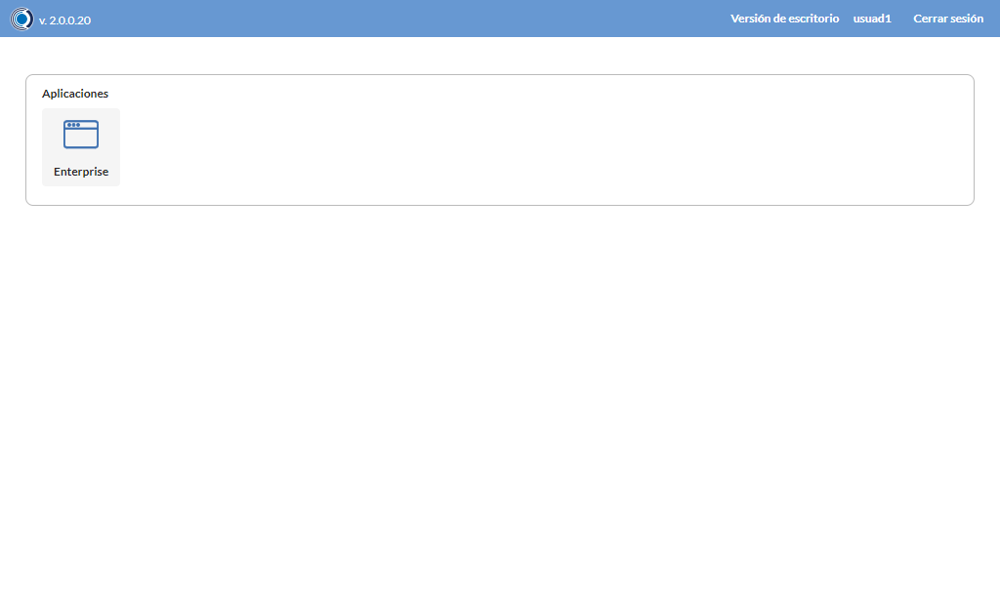
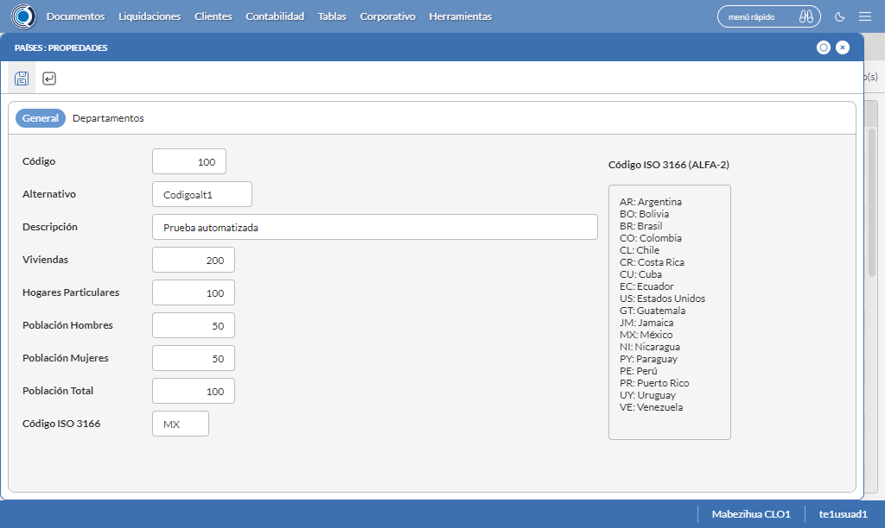

Desarrollado por : Area de Testing PWST
Fecha y hora de inicio : 2022-08-26 09:24:43
Duracion : 0:03:55.096353
Resultado : Total 8，Correctos 4 ，Errores 4 ，Taza de resultado 50.00%
Resumen 50.00% Errores 4 Fallidos 0 Correctos 4 Test realizados 8
| Caso de Prueba | Total | Correctos | Fallido | Error | Detalles | Captura del error |
| UbicacionesGeograficas.Test: Escenario 1 de Ubicaciones Geograficas | 8 | 4 | 0 | 4 | Detalles | |
test |
pt1_1: 2022-08-26 09:24:45,107 - root - INFO - Se abre el chrome
2022-08-26 09:24:46,229 - root - INFO - Entra a la URL
2022-08-26 09:24:46,491 - root - INFO - Maximiza la pantalla
2022-08-26 09:24:49,538 - root - INFO - Cambia al frame
|
|
||||
test_000: Ingresa a la base de datos |
pt1_2: 2022-08-26 09:24:52,631 - root - INFO - Escribe el usuario
2022-08-26 09:24:52,736 - root - INFO - Escribe la contraseña
2022-08-26 09:24:52,865 - root - INFO - Se dio clic en el boton ingresar
2022-08-26 09:24:54,136 - root - INFO - Ejecutar Enterprise
2022-08-26 09:24:54,137 - root - INFO - Captura: C:\xampp\htdocs\versiones\automatizaciones\AutoPWST\01UG\report\img screen：20220826_09_24_54.png
2022-08-26 09:24:58,358 - root - INFO - Cambia entre pestañas
|
 | ||||
test_001: Abre menu y ejecuta pantalla |
pt1_3: 2022-08-26 09:25:03,486 - root - INFO - Abre el menu completo
2022-08-26 09:25:19,469 - root - INFO - Abre la pantalla de Paises
2022-08-26 09:25:19,533 - root - INFO - La pantalla ejecutada es Paises.
2022-08-26 09:25:19,533 - root - INFO - Captura: C:\xampp\htdocs\versiones\automatizaciones\AutoPWST\01UG\report\img screen：20220826_09_25_19.png
2022-08-26 09:25:19,697 - root - INFO - Se presiona el boton 'Nuevo', para crear un nuevo registro.
|

|
||||
test_002: Abre la ventana de nuevo y crear un registro |
pt1_4: 2022-08-26 09:25:22,783 - root - INFO - Se abrio la pantalla para el ingreso de un registro nuevo.
2022-08-26 09:25:22,821 - root - INFO - El campo 'Codigo' si se encuentra visible.
2022-08-26 09:25:22,861 - root - INFO - El campo 'Alternativo' si se encuentra visible.
2022-08-26 09:25:22,901 - root - INFO - El campo 'Descrición' si se encuentra visible.
2022-08-26 09:25:22,940 - root - INFO - El campo 'Viviendas' si se encuentra visible.
2022-08-26 09:25:22,985 - root - INFO - El campo 'Hogares Particulares' si se encuentra visible.
2022-08-26 09:25:23,027 - root - INFO - El campo 'Población Hombres' si se encuentra visible.
2022-08-26 09:25:23,065 - root - INFO - El campo 'Población Mujeres' si se encuentra visible.
2022-08-26 09:25:23,104 - root - INFO - El campo 'Población Total' si se encuentra visible.
2022-08-26 09:25:23,142 - root - INFO - El campo 'Código ISO 3166' si se encuentra visible.
2022-08-26 09:25:23,219 - root - INFO - Ingresa el codigo del nuevo registro
2022-08-26 09:25:24,357 - root - INFO - Ingresa el codigo alternativo del nuevo registro
2022-08-26 09:25:25,524 - root - INFO - Ingresa la descripción del nuevo registro
2022-08-26 09:25:26,644 - root - INFO - Ingresa el número de viviendas del nuevo registro
2022-08-26 09:25:27,758 - root - INFO - Ingresa el número de hogares particulares del nuevo registro
2022-08-26 09:25:28,860 - root - INFO - Ingresa el número de Población de hombres del nuevo registro
2022-08-26 09:25:30,009 - root - INFO - Ingresa el número de Población de mujeres del nuevo registro
2022-08-26 09:25:31,146 - root - INFO - Ingresa el número de Población Total del nuevo registro
2022-08-26 09:25:32,261 - root - INFO - Ingresa el Codigo ISO del nuevo registro
2022-08-26 09:25:33,266 - root - INFO - Captura: C:\xampp\htdocs\versiones\automatizaciones\AutoPWST\01UG\report\img screen：20220826_09_25_33.png
2022-08-26 09:25:43,617 - root - INFO - Se hace el cambio de pestaña para continuar con el registro nuevo
2022-08-26 09:25:43,734 - root - INFO - Se presiona el boton 'Nuevo', para crear un nuevo registro.
2022-08-26 09:25:44,328 - root - INFO - El campo 'Codigo' si se encuentra visible.
2022-08-26 09:25:44,367 - root - INFO - El campo 'Alternativo' si se encuentra visible.
2022-08-26 09:25:44,406 - root - INFO - El campo 'Descrición' si se encuentra visible.
2022-08-26 09:25:44,444 - root - INFO - El campo 'Impuesto' si se encuentra visible.
2022-08-26 09:25:44,485 - root - INFO - El campo 'Viviendas' si se encuentra visible.
2022-08-26 09:25:44,523 - root - INFO - El campo 'Hogares Particulares' si se encuentra visible.
2022-08-26 09:25:44,562 - root - INFO - El campo 'Población Hombres' si se encuentra visible.
2022-08-26 09:25:44,600 - root - INFO - El campo 'Población Mujeres' si se encuentra visible.
2022-08-26 09:25:44,641 - root - INFO - El campo 'Población Total' si se encuentra visible.
2022-08-26 09:25:44,745 - root - INFO - Ingresa el codigo del nuevo registro
2022-08-26 09:25:45,881 - root - INFO - Ingresa el codigo alternativo del nuevo registro
2022-08-26 09:25:47,038 - root - INFO - Ingresa la descripción del nuevo registro
2022-08-26 09:26:00,645 - root - INFO - Ingresa el número de viviendas del nuevo registro
2022-08-26 09:26:01,800 - root - INFO - Ingresa el número de hogares particulares del nuevo registro
2022-08-26 09:26:02,934 - root - INFO - Ingresa el número de Población de hombres del nuevo registro
2022-08-26 09:26:04,051 - root - INFO - Ingresa el número de Población de mujeres del nuevo registro
2022-08-26 09:26:05,168 - root - INFO - Ingresa el número de Población Total del nuevo registro
2022-08-26 09:26:06,274 - root - INFO - Se hace el cambio de pestaña para continuar con el registro nuevo
2022-08-26 09:26:07,400 - root - INFO - Se presiona el boton 'Nuevo', para crear un nuevo registro.
2022-08-26 09:26:07,988 - root - INFO - El campo 'Localidad' si se encuentra visible.
2022-08-26 09:26:08,030 - root - INFO - El campo 'Alternativo' si se encuentra visible.
2022-08-26 09:26:08,087 - root - INFO - El campo 'Descrición' si se encuentra visible.
2022-08-26 09:26:08,125 - root - INFO - El campo 'Viviendas' si se encuentra visible.
2022-08-26 09:26:08,164 - root - INFO - El campo 'Hogares Particulares' si se encuentra visible.
2022-08-26 09:26:08,201 - root - INFO - El campo 'Población Hombres' si se encuentra visible.
2022-08-26 09:26:08,240 - root - INFO - El campo 'Población Mujeres' si se encuentra visible.
2022-08-26 09:26:08,283 - root - INFO - El campo 'Población Total' si se encuentra visible.
2022-08-26 09:26:08,380 - root - INFO - Ingresa el codigo del nuevo registro
2022-08-26 09:26:09,512 - root - INFO - Ingresa el codigo alternativo del nuevo registro
2022-08-26 09:26:10,642 - root - INFO - Ingresa la descripción del nuevo registro
2022-08-26 09:26:11,798 - root - INFO - Ingresa el número de viviendas del nuevo registro
2022-08-26 09:26:12,924 - root - INFO - Ingresa el número de hogares particulares del nuevo registro
2022-08-26 09:26:14,064 - root - INFO - Ingresa el número de Población de hombres del nuevo registro
2022-08-26 09:26:15,199 - root - INFO - Ingresa el número de Población de mujeres del nuevo registro
2022-08-26 09:26:16,316 - root - INFO - Ingresa el número de Población Total del nuevo registro
2022-08-26 09:26:17,425 - root - INFO - Se hace el cambio de pestaña para continuar con el registro nuevo
2022-08-26 09:26:20,561 - root - INFO - Se presiona el boton 'Nuevo', para crear un nuevo registro.
2022-08-26 09:26:21,176 - root - INFO - El campo 'Código' si se encuentra visible.
2022-08-26 09:26:21,221 - root - INFO - El campo 'Alternativo' si se encuentra visible.
2022-08-26 09:26:21,263 - root - INFO - El campo 'Descrición' si se encuentra visible.
2022-08-26 09:26:21,303 - root - INFO - El campo 'Viviendas' si se encuentra visible.
2022-08-26 09:26:21,344 - root - INFO - El campo 'Hogares Particulares' si se encuentra visible.
2022-08-26 09:26:21,382 - root - INFO - El campo 'Población Hombres' si se encuentra visible.
2022-08-26 09:26:21,421 - root - INFO - El campo 'Población Mujeres' si se encuentra visible.
2022-08-26 09:26:21,462 - root - INFO - El campo 'Población Total' si se encuentra visible.
2022-08-26 09:26:21,575 - root - INFO - Ingresa el codigo del nuevo registro
2022-08-26 09:26:22,753 - root - INFO - Ingresa el codigo alternativo del nuevo registro
2022-08-26 09:26:23,914 - root - INFO - Ingresa la descripción del nuevo registro
2022-08-26 09:26:25,067 - root - INFO - Ingresa el número de viviendas del nuevo registro
2022-08-26 09:26:26,225 - root - INFO - Ingresa el número de hogares particulares del nuevo registro
2022-08-26 09:26:27,379 - root - INFO - Ingresa el número de Población de hombres del nuevo registro
2022-08-26 09:26:28,504 - root - INFO - Ingresa el número de Población de mujeres del nuevo registro
2022-08-26 09:26:29,664 - root - INFO - Ingresa el número de Población Total del nuevo registro
2022-08-26 09:26:30,793 - root - INFO - Se da clic en el boton Guardar; se debe crear un nuevo registro.
2022-08-26 09:26:35,920 - root - INFO - Se da clic en el boton Guardar; se debe crear un nuevo registro.
2022-08-26 09:26:41,048 - root - INFO - Se hace el cambio de pestaña para continuar con el registro nuevo
2022-08-26 09:26:44,175 - root - INFO - Se presiona el boton 'Nuevo', para crear un nuevo registro.
2022-08-26 09:26:44,784 - root - INFO - El campo 'Artículo' si se encuentra visible.
2022-08-26 09:26:44,823 - root - INFO - El campo 'Impuesto' si se encuentra visible.
2022-08-26 09:27:29,894 - root - INFO - Se da clic en el boton Guardar; se debe crear un nuevo registro.
2022-08-26 09:27:35,008 - root - INFO - Se da clic en el boton Guardar; se debe crear un nuevo registro.
2022-08-26 09:27:40,154 - root - INFO - Se da clic en el boton Guardar; se debe crear un nuevo registro.
|

|
||||
test_003: Repetir el registro creado anteriormente |
ft1_5: 2022-08-26 09:27:45,274 - root - INFO - Se presiona el boton 'Refrescar', para crear un nuevo registro igual al anterior.
2022-08-26 09:27:55,378 - root - INFO - Se presiona el boton 'Nuevo', para crear un nuevo registro igual al anterior.
2022-08-26 09:28:00,530 - root - INFO - Ingresa el codigo del nuevo registro
2022-08-26 09:28:01,666 - root - INFO - Ingresa el codigo alternativo del nuevo registro
2022-08-26 09:28:02,836 - root - INFO - Ingresa la descripción del nuevo registro
2022-08-26 09:28:03,979 - root - INFO - Ingresa el número de viviendas del nuevo registro
2022-08-26 09:28:05,106 - root - INFO - Ingresa el número de hogares particulares del nuevo registro
2022-08-26 09:28:06,233 - root - INFO - Ingresa el número de Población de hombres del nuevo registro
2022-08-26 09:28:07,398 - root - INFO - Ingresa el número de Población de mujeres del nuevo registro
2022-08-26 09:28:08,507 - root - INFO - Ingresa el número de Población Total del nuevo registro
2022-08-26 09:28:09,623 - root - INFO - Ingresa el Codigo ISO del nuevo registro
2022-08-26 09:28:10,635 - root - INFO - Captura: C:\xampp\htdocs\versiones\automatizaciones\AutoPWST\01UG\report\img screen：20220826_09_28_10.png
2022-08-26 09:28:10,829 - root - INFO - Se da clic en el boton Guardar; se debe crear un nuevo registro.
2022-08-26 09:28:15,833 - root - INFO - Captura: C:\xampp\htdocs\versiones\automatizaciones\AutoPWST\01UG\report\img screen：20220826_09_28_15.png
2022-08-26 09:28:36,063 - root - ERROR - No se encontró el botón Cerrar, revise si el xpath sigue siendo el mismo, para mas detalles del error consulte el reporte
2022-08-26 09:28:36,065 - root - INFO - Captura: C:\xampp\htdocs\versiones\automatizaciones\AutoPWST\01UG\report\img screen：20220826_09_28_36.png
Traceback (most recent call last):
File "C:\xampp\htdocs\versiones\automatizaciones\AutoPWST\01UG\testCase\UbicacionesGeograficas.py", line 50, in test_003
return repetirregistro.repetirregistro(self)
File "C:\xampp\htdocs\versiones\automatizaciones\AutoPWST\01UG\testCase\repetirregistro.py", line 263, in repetirregistro
Cierra_mensaje = self.wait.until(conditions.visibility((By.XPATH, Configuracion.btn_cerrar)))
File "C:\Users\Francisco Calderón\AppData\Local\Programs\Python\Python310\lib\site-packages\selenium\webdriver\support\wait.py", line 89, in until
raise TimeoutException(message, screen, stacktrace)
selenium.common.exceptions.TimeoutException: Message:
Stacktrace:
Backtrace:
Ordinal0 [0x01175FD3+2187219]
Ordinal0 [0x0110E6D1+1763025]
Ordinal0 [0x01023E78+802424]
Ordinal0 [0x01051C10+990224]
Ordinal0 [0x01051EAB+990891]
Ordinal0 [0x0107EC92+1174674]
Ordinal0 [0x0106CBD4+1100756]
Ordinal0 [0x0107CFC2+1167298]
Ordinal0 [0x0106C9A6+1100198]
Ordinal0 [0x01046F80+946048]
Ordinal0 [0x01047E76+949878]
GetHandleVerifier [0x014190C2+2721218]
GetHandleVerifier [0x0140AAF0+2662384]
GetHandleVerifier [0x0120137A+526458]
GetHandleVerifier [0x01200416+522518]
Ordinal0 [0x01114EAB+1789611]
Ordinal0 [0x011197A8+1808296]
Ordinal0 [0x01119895+1808533]
Ordinal0 [0x011226C1+1844929]
BaseThreadInitThunk [0x753CFA29+25]
RtlGetAppContainerNamedObjectPath [0x77547A9E+286]
RtlGetAppContainerNamedObjectPath [0x77547A6E+238]
|
 | ||||
test_004: Modificar el registro |
ft1_6: 2022-08-26 09:28:38,595 - root - ERROR - No se encontró el botón Refrescar, revise si el xpath sigue siendo el mismo, para mas detalles del error consulte el reporte
2022-08-26 09:28:38,595 - root - INFO - Captura: C:\xampp\htdocs\versiones\automatizaciones\AutoPWST\01UG\report\img screen：20220826_09_28_38.png
Traceback (most recent call last):
File "C:\xampp\htdocs\versiones\automatizaciones\AutoPWST\01UG\testCase\modificarregistro.py", line 22, in modificarregistro
Refresca2 = self.wait.until(conditions.visibility((By.XPATH, Configuracion.btn_Refresca)))
File "C:\Users\Francisco Calderón\AppData\Local\Programs\Python\Python310\lib\site-packages\selenium\webdriver\support\wait.py", line 78, in until
value = method(self._driver)
File "C:\Users\Francisco Calderón\AppData\Local\Programs\Python\Python310\lib\site-packages\selenium\webdriver\support\expected_conditions.py", line 125, in _predicate
return _element_if_visible(driver.find_element(*locator))
File "C:\Users\Francisco Calderón\AppData\Local\Programs\Python\Python310\lib\site-packages\selenium\webdriver\remote\webdriver.py", line 1238, in find_element
return self.execute(Command.FIND_ELEMENT, {
File "C:\Users\Francisco Calderón\AppData\Local\Programs\Python\Python310\lib\site-packages\selenium\webdriver\remote\webdriver.py", line 418, in execute
self.error_handler.check_response(response)
File "C:\Users\Francisco Calderón\AppData\Local\Programs\Python\Python310\lib\site-packages\selenium\webdriver\remote\errorhandler.py", line 243, in check_response
raise exception_class(message, screen, stacktrace)
selenium.common.exceptions.InvalidSessionIdException: Message: invalid session id
Stacktrace:
Backtrace:
Ordinal0 [0x01175FD3+2187219]
Ordinal0 [0x0110E6D1+1763025]
Ordinal0 [0x01023D40+802112]
Ordinal0 [0x01046C5D+945245]
Ordinal0 [0x01047E76+949878]
GetHandleVerifier [0x014190C2+2721218]
GetHandleVerifier [0x0140AAF0+2662384]
GetHandleVerifier [0x0120137A+526458]
GetHandleVerifier [0x01200416+522518]
Ordinal0 [0x01114EAB+1789611]
Ordinal0 [0x011197A8+1808296]
Ordinal0 [0x01119895+1808533]
Ordinal0 [0x011226C1+1844929]
BaseThreadInitThunk [0x753CFA29+25]
RtlGetAppContainerNamedObjectPath [0x77547A9E+286]
RtlGetAppContainerNamedObjectPath [0x77547A6E+238]
During handling of the above exception, another exception occurred:
Traceback (most recent call last):
File "C:\xampp\htdocs\versiones\automatizaciones\AutoPWST\01UG\testCase\UbicacionesGeograficas.py", line 54, in test_004
return modificarregistro.modificarregistro(self)
File "C:\xampp\htdocs\versiones\automatizaciones\AutoPWST\01UG\testCase\modificarregistro.py", line 33, in modificarregistro
self.driver.get_screenshot_as_file(img_name)
File "C:\Users\Francisco Calderón\AppData\Local\Programs\Python\Python310\lib\site-packages\selenium\webdriver\remote\webdriver.py", line 1311, in get_screenshot_as_file
png = self.get_screenshot_as_png()
File "C:\Users\Francisco Calderón\AppData\Local\Programs\Python\Python310\lib\site-packages\selenium\webdriver\remote\webdriver.py", line 1347, in get_screenshot_as_png
return b64decode(self.get_screenshot_as_base64().encode('ascii'))
File "C:\Users\Francisco Calderón\AppData\Local\Programs\Python\Python310\lib\site-packages\selenium\webdriver\remote\webdriver.py", line 1359, in get_screenshot_as_base64
return self.execute(Command.SCREENSHOT)['value']
File "C:\Users\Francisco Calderón\AppData\Local\Programs\Python\Python310\lib\site-packages\selenium\webdriver\remote\webdriver.py", line 418, in execute
self.error_handler.check_response(response)
File "C:\Users\Francisco Calderón\AppData\Local\Programs\Python\Python310\lib\site-packages\selenium\webdriver\remote\errorhandler.py", line 243, in check_response
raise exception_class(message, screen, stacktrace)
selenium.common.exceptions.InvalidSessionIdException: Message: invalid session id
Stacktrace:
Backtrace:
Ordinal0 [0x01175FD3+2187219]
Ordinal0 [0x0110E6D1+1763025]
Ordinal0 [0x01023D40+802112]
Ordinal0 [0x01046A00+944640]
Ordinal0 [0x0106CA80+1100416]
Ordinal0 [0x0106A8D3+1091795]
Ordinal0 [0x0106A489+1090697]
Ordinal0 [0x01005447+676935]
Ordinal0 [0x010059C3+678339]
Ordinal0 [0x01005DFA+679418]
GetHandleVerifier [0x014190C2+2721218]
GetHandleVerifier [0x0140AAF0+2662384]
GetHandleVerifier [0x0120137A+526458]
GetHandleVerifier [0x01200416+522518]
Ordinal0 [0x01114EAB+1789611]
Ordinal0 [0x010051D7+676311]
Ordinal0 [0x01004C88+674952]
GetHandleVerifier [0x0143BEDC+2864092]
BaseThreadInitThunk [0x753CFA29+25]
RtlGetAppContainerNamedObjectPath [0x77547A9E+286]
RtlGetAppContainerNamedObjectPath [0x77547A6E+238]
|

|
||||
test_005: Eliminar el registro creado |
ft1_7: 2022-08-26 09:28:38,605 - root - ERROR - No se encontró el botón Refrescar, revise si el xpath sigue siendo el mismo, para mas detalles del error consulte el reporte
2022-08-26 09:28:38,605 - root - INFO - Captura: C:\xampp\htdocs\versiones\automatizaciones\AutoPWST\01UG\report\img screen：20220826_09_28_38.png
Traceback (most recent call last):
File "C:\xampp\htdocs\versiones\automatizaciones\AutoPWST\01UG\testCase\eliminarregistro.py", line 21, in eliminarregistro
Refresca3 = self.wait.until(conditions.visibility((By.XPATH, Configuracion.btn_Refresca)))
File "C:\Users\Francisco Calderón\AppData\Local\Programs\Python\Python310\lib\site-packages\selenium\webdriver\support\wait.py", line 78, in until
value = method(self._driver)
File "C:\Users\Francisco Calderón\AppData\Local\Programs\Python\Python310\lib\site-packages\selenium\webdriver\support\expected_conditions.py", line 125, in _predicate
return _element_if_visible(driver.find_element(*locator))
File "C:\Users\Francisco Calderón\AppData\Local\Programs\Python\Python310\lib\site-packages\selenium\webdriver\remote\webdriver.py", line 1238, in find_element
return self.execute(Command.FIND_ELEMENT, {
File "C:\Users\Francisco Calderón\AppData\Local\Programs\Python\Python310\lib\site-packages\selenium\webdriver\remote\webdriver.py", line 418, in execute
self.error_handler.check_response(response)
File "C:\Users\Francisco Calderón\AppData\Local\Programs\Python\Python310\lib\site-packages\selenium\webdriver\remote\errorhandler.py", line 243, in check_response
raise exception_class(message, screen, stacktrace)
selenium.common.exceptions.InvalidSessionIdException: Message: invalid session id
Stacktrace:
Backtrace:
Ordinal0 [0x01175FD3+2187219]
Ordinal0 [0x0110E6D1+1763025]
Ordinal0 [0x01023D40+802112]
Ordinal0 [0x01046A00+944640]
Ordinal0 [0x0106CA80+1100416]
Ordinal0 [0x0106A8D3+1091795]
Ordinal0 [0x0106A489+1090697]
Ordinal0 [0x01005447+676935]
Ordinal0 [0x010059C3+678339]
Ordinal0 [0x01005DFA+679418]
GetHandleVerifier [0x014190C2+2721218]
GetHandleVerifier [0x0140AAF0+2662384]
GetHandleVerifier [0x0120137A+526458]
GetHandleVerifier [0x01200416+522518]
Ordinal0 [0x01114EAB+1789611]
Ordinal0 [0x010051D7+676311]
Ordinal0 [0x01004C88+674952]
GetHandleVerifier [0x0143BEDC+2864092]
BaseThreadInitThunk [0x753CFA29+25]
RtlGetAppContainerNamedObjectPath [0x77547A9E+286]
RtlGetAppContainerNamedObjectPath [0x77547A6E+238]
During handling of the above exception, another exception occurred:
Traceback (most recent call last):
File "C:\xampp\htdocs\versiones\automatizaciones\AutoPWST\01UG\testCase\UbicacionesGeograficas.py", line 58, in test_005
return eliminarregistro.eliminarregistro(self)
File "C:\xampp\htdocs\versiones\automatizaciones\AutoPWST\01UG\testCase\eliminarregistro.py", line 31, in eliminarregistro
self.driver.get_screenshot_as_file(img_name)
File "C:\Users\Francisco Calderón\AppData\Local\Programs\Python\Python310\lib\site-packages\selenium\webdriver\remote\webdriver.py", line 1311, in get_screenshot_as_file
png = self.get_screenshot_as_png()
File "C:\Users\Francisco Calderón\AppData\Local\Programs\Python\Python310\lib\site-packages\selenium\webdriver\remote\webdriver.py", line 1347, in get_screenshot_as_png
return b64decode(self.get_screenshot_as_base64().encode('ascii'))
File "C:\Users\Francisco Calderón\AppData\Local\Programs\Python\Python310\lib\site-packages\selenium\webdriver\remote\webdriver.py", line 1359, in get_screenshot_as_base64
return self.execute(Command.SCREENSHOT)['value']
File "C:\Users\Francisco Calderón\AppData\Local\Programs\Python\Python310\lib\site-packages\selenium\webdriver\remote\webdriver.py", line 418, in execute
self.error_handler.check_response(response)
File "C:\Users\Francisco Calderón\AppData\Local\Programs\Python\Python310\lib\site-packages\selenium\webdriver\remote\errorhandler.py", line 243, in check_response
raise exception_class(message, screen, stacktrace)
selenium.common.exceptions.InvalidSessionIdException: Message: invalid session id
Stacktrace:
Backtrace:
Ordinal0 [0x01175FD3+2187219]
Ordinal0 [0x0110E6D1+1763025]
Ordinal0 [0x01023D40+802112]
Ordinal0 [0x01046A00+944640]
Ordinal0 [0x0106CA80+1100416]
Ordinal0 [0x0106A8D3+1091795]
Ordinal0 [0x0106A489+1090697]
Ordinal0 [0x01005447+676935]
Ordinal0 [0x010059C3+678339]
Ordinal0 [0x01005DFA+679418]
GetHandleVerifier [0x014190C2+2721218]
GetHandleVerifier [0x0140AAF0+2662384]
GetHandleVerifier [0x0120137A+526458]
GetHandleVerifier [0x01200416+522518]
Ordinal0 [0x01114EAB+1789611]
Ordinal0 [0x010051D7+676311]
Ordinal0 [0x01004C88+674952]
GetHandleVerifier [0x0143BEDC+2864092]
BaseThreadInitThunk [0x753CFA29+25]
RtlGetAppContainerNamedObjectPath [0x77547A9E+286]
RtlGetAppContainerNamedObjectPath [0x77547A6E+238]
|
|
||||
test_006: Cerrar_Navegador |
ft1_8: Traceback (most recent call last):
File "C:\xampp\htdocs\versiones\automatizaciones\AutoPWST\01UG\testCase\UbicacionesGeograficas.py", line 62, in test_006
self.driver.close()
File "C:\Users\Francisco Calderón\AppData\Local\Programs\Python\Python310\lib\site-packages\selenium\webdriver\remote\webdriver.py", line 931, in close
self.execute(Command.CLOSE)
File "C:\Users\Francisco Calderón\AppData\Local\Programs\Python\Python310\lib\site-packages\selenium\webdriver\remote\webdriver.py", line 418, in execute
self.error_handler.check_response(response)
File "C:\Users\Francisco Calderón\AppData\Local\Programs\Python\Python310\lib\site-packages\selenium\webdriver\remote\errorhandler.py", line 243, in check_response
raise exception_class(message, screen, stacktrace)
selenium.common.exceptions.InvalidSessionIdException: Message: invalid session id
Stacktrace:
Backtrace:
Ordinal0 [0x01175FD3+2187219]
Ordinal0 [0x0110E6D1+1763025]
Ordinal0 [0x01023D40+802112]
Ordinal0 [0x01046A00+944640]
Ordinal0 [0x0106CA80+1100416]
Ordinal0 [0x0106A8D3+1091795]
Ordinal0 [0x0106A489+1090697]
Ordinal0 [0x01005447+676935]
Ordinal0 [0x010059C3+678339]
Ordinal0 [0x01005DFA+679418]
GetHandleVerifier [0x014190C2+2721218]
GetHandleVerifier [0x0140AAF0+2662384]
GetHandleVerifier [0x0120137A+526458]
GetHandleVerifier [0x01200416+522518]
Ordinal0 [0x01114EAB+1789611]
Ordinal0 [0x010051D7+676311]
Ordinal0 [0x01004C88+674952]
GetHandleVerifier [0x0143BEDC+2864092]
BaseThreadInitThunk [0x753CFA29+25]
RtlGetAppContainerNamedObjectPath [0x77547A9E+286]
RtlGetAppContainerNamedObjectPath [0x77547A6E+238]
|
|
||||
| Caso de prueba | 8 | 4 | 0 | 4 | Taza de resultado：50.00% | |